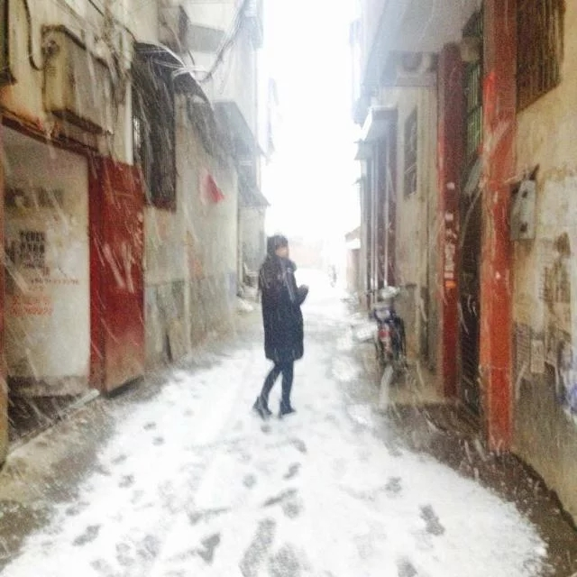

欢迎来到我的小窝~！~
站点初成 ， 内容不足，多多包涵。暂时没有精力继续部署了 来首相见欢助助兴 无言独上西楼 月如钩 寂寞梧桐深院锁清秋 剪不断、理还乱 是离愁 别是一般滋味在心头 吃瓜群众：好诗好诗！！！再Tm来一首~~~ ps：来你大爷 ， 容老夫喝口茶先
姐姐，你冷不
说点啥呢, 好饿, 泡杯香飘飘吧...
Photo

欢迎来到我的小窝~！~
站点初成 ， 内容不足，多多包涵。暂时没有精力继续部署了 来首相见欢助助兴 无言独上西楼 月如钩 寂寞梧桐深院锁清秋 剪不断、理还乱 是离愁 别是一般滋味在心头 吃瓜群众：好诗好诗！！！再Tm来一首~~~ ps：来你大爷 ， 容老夫喝口茶先